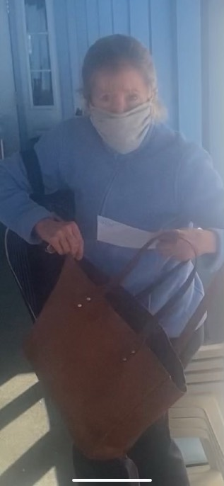
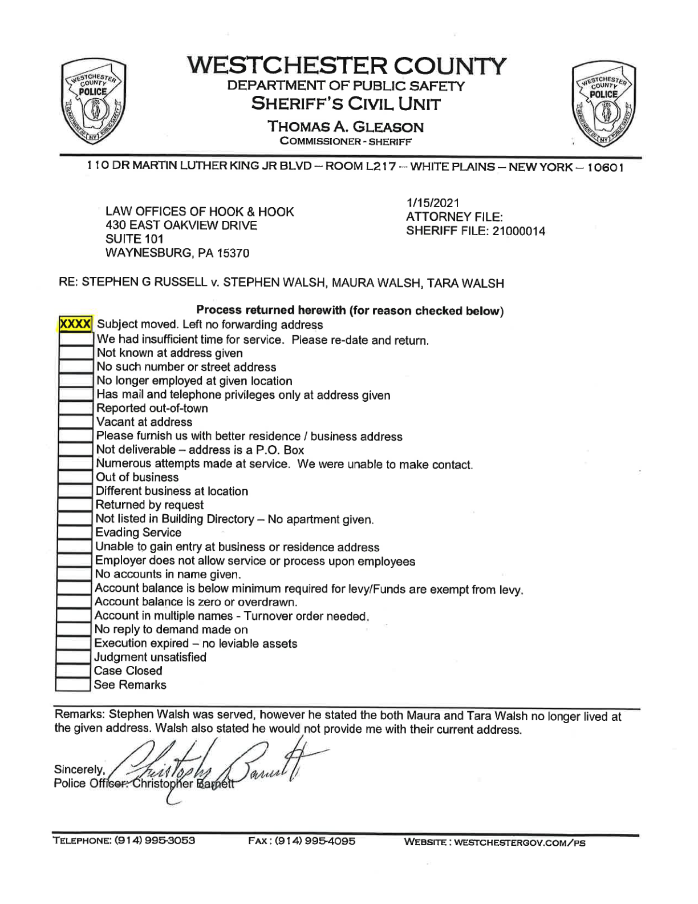
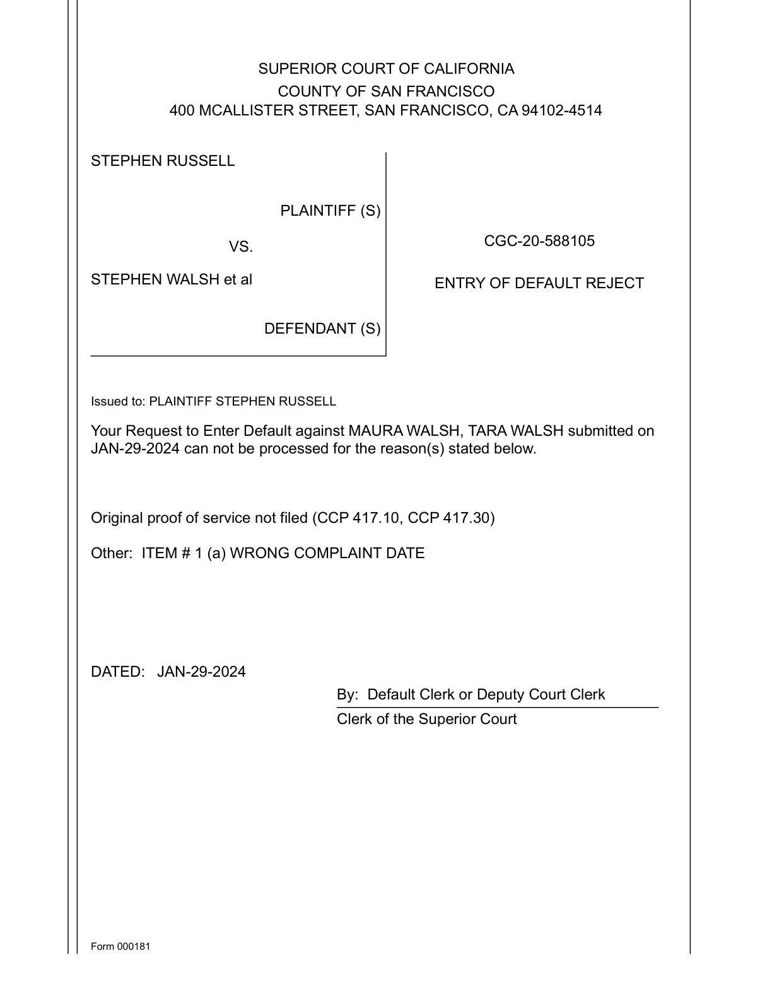

The Kidnapping Case

The complaint was filed on December 2, 2020, in San Francisco Superior Court. Russell v. Stephen Walsh, Maura Walsh, Tara Walsh, and Does 1 through 20. Eight causes of action: abduction of a child from a parent, intentional interference with parental rights, fraud, conspiracy, aiding and abetting, intentional infliction of emotional distress, negligent infliction of emotional distress, negligence. Jury trial demanded.
The case number was CGC-20-588105.
For the first time, the legal system would be asked to examine not what Tara did alone but what the Walshes did together. The complaint named the family: the father who coordinated the vacation ruse and directed his daughter home from the Uber, the mother who refused to release Evie at the Crabtree’s handoff, the daughter who carried the child onto the plane. Three defendants. Eight causes of action. The instrument that should have compelled accountability for the taking of Evie Russell from her father in the state of California.
The case would accumulate eighty-nine entries in its register of actions over the next four years. It would never reach trial.
Six weeks after the complaint was filed, on January 14, 2021, Officer Christopher Barnett of the Westchester County Sheriff’s Office arrived at 394 Whippoorwill Road, Chappaqua. The electronic gate was at the bottom. The driveway climbed a quarter mile through woods to the compound at the top.
Walsh Sr. was served at 6:54 PM on January 15. The return described him: male, approximately fifty to fifty-five years of age, one hundred and seventy-five pounds, five feet ten inches, white, grey hair.
When Officer Barnett asked about Maura and Tara, Walsh Sr. told him they no longer lived at the given address. He would not provide a forwarding address.
The sheriff’s return came back: Maura Walsh — NOT SERVED. Tara Walsh — NOT SERVED.
Both lived there. Maura would testify under oath three months later that her address was the family home. Tara would list the family home as her address on a Proof of Service filed in the battery case in March 2022. The court would serve Tara the jury verdict at the family home. Tara would give the family home as her address at trial. A photograph existed of Maura being served legal documents at her tennis club in Chappaqua, the same town, the same woman, sitting with a leather bag and a face mask, not hiding.
There exists a photograph. Maura Walsh, sitting at her tennis club in Chappaqua, wearing a face mask, a leather bag beside her, being handed legal documents by a process server. The woman Walsh Sr. told the sheriff no longer lived at the family home, photographed in the town where the family home sits, at the club where she was a member, accepting the service she and her family had spent years evading.
But the sheriff’s return said they no longer lived there. And the court treated the sheriff’s return as fact.

Three weeks after the sheriff’s visit, private investigator Alexander Saavedra arrived at the same address. The gated entrance opened automatically this time. Inside the storm door, a child of approximately two years was visible. A slim-figured woman with blonde hair came forward, looked at Saavedra, and took the child away. Then Walsh Sr. appeared. He was, Saavedra noted in his affidavit, “quite pleasant.” When Saavedra presented Tara’s subpoena, Walsh Sr. said: “I will accept it.” He took the subpoena and volunteered that Tara “is often visited for service of Subpoenas and is therefore leary [sic] of same.”
The man who told the sheriff his daughter did not live there accepted her legal papers three weeks later at the same address, acknowledged she lived there, and explained, pleasantly, that she was tired of being served there. The child had been in Tara’s arms when she retreated from the door. Evie, at two, already part of the choreography of evasion.

![Affidavit of Service by Alexander Saavedra, licensed private detective, State of New Jersey. Describes serving Subpoena and Notice of Deposition on Tara Walsh at 394 Whippoorwill Rd, Chappaqua. The residence has a gated entrance which opened automatically. A child of approximately 2 years was visible inside the storm door. A slim figured woman with blonde hair, later identified as Tara Walsh, came forward, looked at him, and took the child away. A gentleman of approximately 60 years was quite pleasant and stated I will accept it.](../Evidence/photos/extracted_pages/LEGAL-KIDNAP-SAAVEDRA-AFFIDAVIT.png)
On April 19, 2021, Walsh Sr. filed a twenty-seven-page Motion to Quash Service of Summons in the kidnapping case, accompanied by a sworn declaration under penalty of perjury.
The declaration is the patriarch’s version of events, the document in which the man who coordinated the departure presents himself as a bystander who arranged a car from the airport.
“I am a resident of New York since my birth over 60 years ago.”
“I have never been to San Francisco and neither has my wife Maura Walsh.”
“My connection to California is nonexistent.”
The reader already knows what Walsh Sr. wrote Steve in June 2018: “Works for us — I appreciate your flexibility Steve.” The reader already knows what Walsh Sr. said to Tara from the back seat of the Uber: come home. The reader already knows what Walsh Sr. told Llaguno under oath: “I would be less than 100 percent genuine.” Now the reader has the declaration, and the distance between what Walsh Sr. swore in the kidnapping case and what the reader has already seen IS the evidence.
He reduced the entire coordination to a single sentence: “The only communication I had with Mr. Russell in June 2018 concerning Tara and Evie’s return to New York was to acknowledge they were returning and to facilitate transportation from the airport.”
Facilitate transportation from the airport. The word “facilitate,” an institutional verb, a project manager’s verb, deployed by a man who told his daughter to get out of an Uber, whose family coordinated a vacation ruse, whose wife refused to hand over a child at a restaurant handoff, whose son drove to the airport to collect a woman and baby being removed from California in violation of a court order. The patriarch’s self-portrait: a logistics coordinator. A man who arranged a car.
The character attack followed: “Mr. Russell is a very litigious individual with a lot of time and a lot of money.” This from a man who would spend the next four years funding the legal destruction of every attorney Steve retained. The description was a mirror held backward.
The motion to quash was granted. The court found Walsh Sr.’s “vague communications” did not demonstrate “any sort of fraudulent conspiracy.” The language is worth pausing on: not “insufficient evidence of conspiracy” but “vague communications,” as though the communications themselves were the problem rather than the conspiracy they documented. Walsh Sr. was “not strictly liable for his adult daughter’s decision to leave California.” Jurisdictional discovery denied.
The man who coordinated the departure had no connection to the state his granddaughter was taken from. He was no longer a party. The gate was electronic and the driveway climbed a quarter mile and Walsh Sr. was at the top, where he had always been, beyond the reach of the process he had set in motion.
"I am a resident of New York since my birth over 60 years ago."
"I have never been to San Francisco and neither has my wife Maura Walsh."
"My connection to California is nonexistent."
"The only communication I had with Mr. Russell in June 2018 concerning Tara and Evie's return to New York was to acknowledge they were returning and to facilitate transportation from the airport."
"Mr. Russell is a very litigious individual with a lot of time and a lot of money."
The court found Walsh Sr.'s communications with Russell constituted "vague communications" that did not demonstrate "any sort of fraudulent conspiracy."
Walsh Sr. was "not strictly liable for his adult daughter's decision to leave California."
Jurisdictional discovery denied. Walsh Sr. dismissed from the case.
Walsh Sr. was no longer a party to the kidnapping case. But the attorneys on the case he had left kept disappearing.
On October 26, 2021, Michaela G. Davies of Robison, Sharp, Sullivan & Brust, a firm in Reno, Nevada, eleven hundred miles from the Walsh compound and three thousand from the San Francisco courthouse, substituted as Steve’s counsel. She was the attorney who actually did the work.
In March 2022, Davies filed an OSC declaration that assembled the entire service evasion into a single document. She cited the sheriff’s return, then dismantled it: Walsh Sr. told the sheriff Maura and Tara didn’t live there, but Maura testified under oath three months later that her address was 394 Whippoorwill Road. Tara filed a Proof of Service in the battery case listing the family home. The court served Tara the jury verdict at the family home. Tara gave the family home as her address at trial. Tara acknowledged the kidnapping case itself in her JNOV declaration, calling it “a separate lawsuit suing my parents and I in San Francisco,” which meant she knew about the case, knew about the complaint, and chose not to respond. Davies filed POS-040 proving certified mail and email service to Maura and Tara at addresses they demonstrably used. Her conclusion: “It cannot be reasonably disputed that Tara and Maura have intentionally and improperly evaded service, and that Tara and Maura have actual notice of this action.”
For the first time, an attorney had assembled the lie and its refutation into one filing.
Seven months later, on May 31, 2022, Davies filed a Motion to Be Relieved as Counsel.
The withdrawal correspondence surfaced in June. Davies cited a billing dispute with Morgan Stanley. Steve opposed the withdrawal. His opposition contained a single sentence that connected everything:
“I am opposing the withdrawal from the two cases and expect to succeed ‘on camera.’ I have successfully opposed a previous withdrawal attempt over money issues and Stephen Walsh’s threats to de-license my counsel.”
That sentence. The man who had successfully quashed himself from the kidnapping case — who was no longer a party, who had no connection to California, whose role was to facilitate transportation from the airport — was threatening the attorney on the case he had left. From outside the courtroom. Where no judge could see it. Where no sanction could reach.
Kent Robison, RSSB’s founding partner, responded: “We have a clear and unavoidable duty to withdraw.”
The kidnapping case was unrepresented.
This was the sixth iteration of the same mechanism. Katherine Chestnut, whom Walsh Sr. visited at her law office in 2018 and told to stop contacting his wife. Jason Advocate, to whom Walsh Sr. sent word through Tara’s friend Audrey Courson that representing Steve was a “moral violation of your trade.” Ned Gelhaar, targeted by Walsh Sr. on a recorded voicemail: “If this causes any kind of anguish to my family, I will have your license.” The Enenstein firm, which withdrew during active depositions in February 2020, deposition scheduling already underway, the Walsh and Zipperer depositions weeks away. The withdrawal triggered an intensive one-day email exchange, twelve messages, the entire handoff collapsing in real time. Enenstein claimed DiFabio had agreed in writing to cover the depositions. DiFabio responded: “The ship has sailed.” The firm that had won the DVRO and had “Tara on the run in SF Battery Case” was gone. The deposition window closed. A year would pass before Moore conducted the four depositions from the Walsh compound carriage house. Joy Llaguno, who withdrew from the kidnapping case after those depositions. Davies and RSSB, who withdrew after Walsh Sr.’s threats to de-license.
Six attorneys. Six departures. One man funding and directing the pattern from a compound in Chappaqua, above the electronic gate, at the end of the quarter-mile driveway, where the sheriff had to be buzzed in and the process servers had to be acknowledged and the daughter who did not live there was often visited for service of subpoenas and was therefore leery of same.
"I am opposing the withdrawal from the two cases and expect to succeed 'on camera.' I have successfully opposed a previous withdrawal attempt over money issues and Stephen Walsh's threats to de-license my counsel."
Kent Robison, RSSB Founding Partner, June 22, 2022:
"We have a clear and unavoidable duty to withdraw."
What happened next took four years. It is best understood as a comparison.
In Westchester County Family Court, on February 6, 2020, Steve’s failure to appear at a hearing produced automatic results. Default entered. Sole custody to Tara. Order of Protection granted. The mechanism operated with frictionless efficiency — a man who did not appear lost his daughter in the time it took a clerk to file the papers.
In San Francisco Superior Court, Steve’s attempts to default the Walshes for their failure to respond were rejected three times.
January 29, 2024: Default request against Maura and Tara. Rejected. “Original proof of service not filed.” “Wrong complaint date.”
April 10, 2024: Default request against Maura, Tara, and Does 1 through 20. Rejected. “Original proof of service not filed.” “Does cannot be defaulted.”
December 30, 2024: Default request against Maura and Tara. Rejected. “Original proof of service not filed.” “Wrong complaint date.” The same deficiencies as the first rejection. Eleven months later. The same clerk’s office.
Steve was proceeding pro se. He had been pro se since RSSB’s departure in 2022, filing what a person without legal training files: the right arguments in the wrong format, the correct facts under the wrong headings, the substance present but the form inadequate. Each rejection compounded. Each deadline slipped.
In Nevada, on a table with a court-issue reject slip in his hands, Steve read the same deficiency cited on the January 29 rejection: “Original proof of service not filed.” “Wrong complaint date.” He had amended the complaint date. He had filed the proof of service again. Eleven months later, the clerk’s office cited the same complaint date error. The papers were tabbed. The exhibits were numbered. The argument was there — the service evasion was documented, the video stills were included, the email proof was there. Form deficiency. Titling error. The substance did not move the machinery anymore. The machinery was waiting for a lawyer to move it.
In January 2023, process server Brendan Collishaw of Demovsky Lawyer Service attempted personal service at Tara’s new address, a separate residence from the family compound. He went three times. Each time, no answer. On the third visit, Tara texted Steve a photograph of the process server standing at her front door. She was inside. She could see him. She photographed him through the door and sent the image to the man whose lawsuit she was avoiding, asking if he was trying to serve her.
She knew the complaint existed. She knew the process server was at her door. She photographed him through the door — a woman who had once photographed a middle finger in a bathroom mirror, who had texted gun selfies to friends, who documented everything she found entertaining, and sent the image to the man whose lawsuit she was avoiding. And the court maintained she had not been served.
The institutional architecture that exists to ensure procedural fairness instead ensured procedural failure for the litigant who had no attorney because the man who was no longer a party kept threatening them.
On August 5, 2025, the case was dismissed. The court cited failure to serve within three years.
In a case where the defendants appeared. Where Walsh Sr. filed a twenty-seven-page declaration with sworn statements. Where Davies filed POS-040 proving certified mail and email service to all three defendants. Where Tara acknowledged the kidnapping case in her own JNOV declaration, calling it “a separate lawsuit suing my parents and I in San Francisco.” Where twelve separate pieces of evidence proved the defendants lived at the address their father said they did not live at.
Failure to serve within three years.
Steve filed four organized pro se motion packets in August: sanctions, motion to vacate, ex parte application, and a default prove-up seeking fifty million in general damages and fifteen million in special damages. Rejected post-dismissal for “titling and combining” issues.
The motion to vacate was denied in September. In October 2025, Steve filed a Motion for Reconsideration. His argument: “The Court denied relief based on non-service within three years. The record shows otherwise.” He attached, as Exhibit C, the transcript of Walsh Sr.’s voicemail, the patriarch’s own voice, threatening counsel, admitting he had instructed his family not to respond.
The voicemail transcript entered the record at last. A digital object: the date it was recorded, the number it was left on, the words preserved in a format that could be played and replayed and archived. The voice that had operated through intermediaries and closed gates and withdrawn attorneys was now audible, fixed in a transcript, preserved in the court’s filing database. It was the only thing Walsh Sr. could not quash from the case he was no longer party to — the sound of himself, on tape, unambiguous, undeniable. The threat was there. The admission was there. The sound did not care whether the man who made it was still a party to the case.

Eighty-nine entries in the register of actions. Four years. Four hundred dollars in sanctions against the father who filed the case. Zero accountability for the family who took his daughter.
The two-track system was not a conspiracy. It was not judicial corruption. It was a system operating as designed when the design advantages the party with resources, geography, and institutional fluency. In Westchester, defaults enter in minutes when the person they disadvantage is Steve. In San Francisco, defaults are rejected for technicalities, wrong complaint date, original proof of service not filed, Does cannot be defaulted, when the people they would disadvantage are the Walshes. The mechanism is not identical in both courts. That is the point. Each court applies its own rules. The rules happen to produce the same result: one family gets the benefit of every procedural doubt, and the other gets sanctioned four hundred dollars at a time.
Walsh Sr. watches from Chappaqua. Successfully quashed. No longer a party. But still the voice on the voicemail. Still the man at the top of the driveway who told the sheriff his family didn’t live where they all live. Still funding the attorneys who destroy the attorneys, then withdrawing from the cases he has emptied.
The case that named the family — not just Tara, but the parents, the system, the coordination — dies not from a ruling on its merits but from the procedural weight accumulated on a pro se litigant whose attorneys keep leaving because the man who left the case first keeps threatening them.
The child visible through the storm door in February 2021 — at two, in Tara’s arms — was four years old when the third default rejection came in December 2024. She was behind the gate. The two-year-old who retreated from view is now four, reading books, in first grade somewhere in Westchester. The same compound, the same driveway, the same door. The year the case was dismissed, she was going to school and coming home. The year the jury rendered its verdict, she was seven. The case that would have named her family had lost her childhood accumulating procedural rejections. Not to a ruling. To a clerk’s error on complaint dates.
In ten months, a jury will hear the evidence this case never reached. But the jury’s verdict will apply only to Tara, the person who carried out the scheme. The parents who conceived it, funded it, directed it, and destroyed every attorney who tried to hold them accountable will not be named in the verdict. They will not be named in any verdict. That is what the eighty-nine entries accomplished. Not innocence. Absence.
Machine Summary
- Chapter
- B42 — The Kidnapping Case
- Act
- Act VIII — Civil Rights (2020–2025)
- Summary
- CGC-20-588105. Eight causes of action. Eighty-nine register entries. Three rejected defaults. One family gets the benefit of every procedural doubt. The other gets sanctioned four hundred dollars at a time.
- Evidence Confidence Score
- 92/100
- Tags
- 2020, 2021, 2022, 2023, 2024, 2025, Walsh Sr., Maura Walsh, Tara Walsh, Michaela Davies, RSSB, Kidnapping Case, Two-Track System, Attorney Destruction, Service Evasion, Pro Se, Default
- Related Chapters
- B48, B04, B23